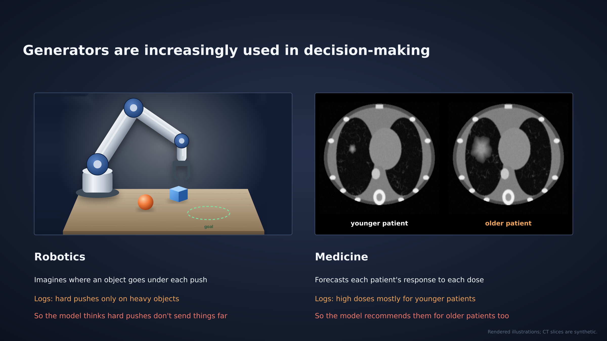
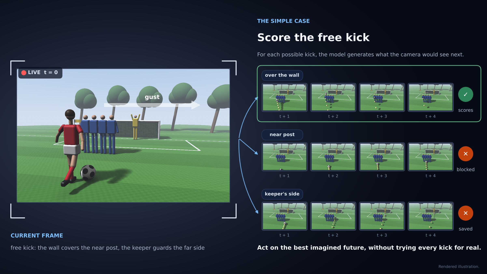
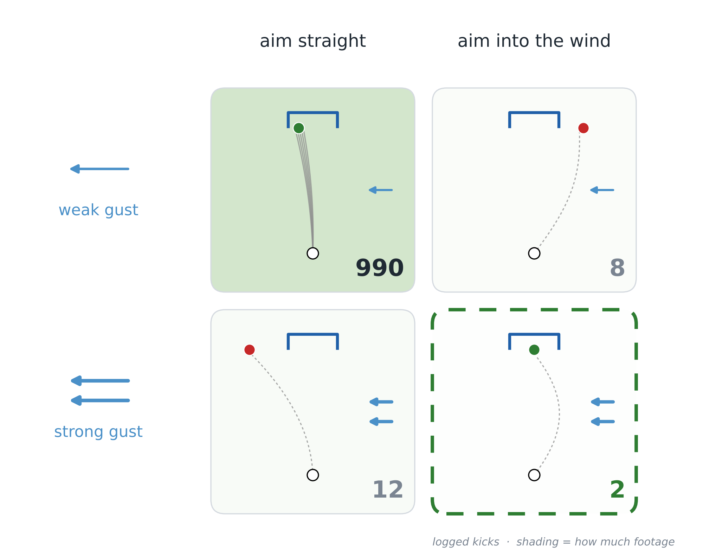
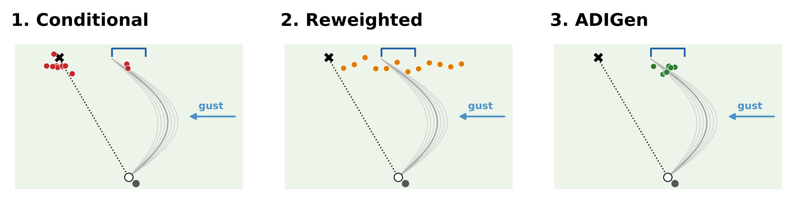
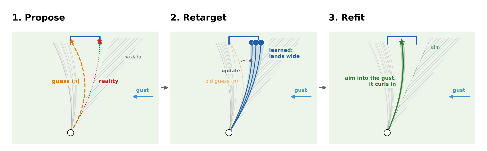

The Answer: only if trained for the decision.
A generator that looks accurate can still make bad decisions. Retargeting it toward the decisions it supports fixes this.
- Problem
- The data: logs show what happened, not what each action would do; actions can be high-dimensional; and policies change across environments.
- The objective: a policy optimized against a poorly-extrapolating generator can be (wrongly) overconfident.
- Fix
- Train a doubly robust, invariant generator (ADIGen), learn a pilot policy from its rollouts, then retarget the generator toward that policy and relearn.
Key results
- Video: realistic PhyWorld rollouts, and better decisions from them — on out-of-distribution gusts, regret 0.74 → 0.28 (conditional vs. retargeted).
- Cells: retargeting recovers the rescue peak of all 3 active compounds from only 10% of the high-dose wells.
- Theory: retargeting removes the worst-case density ratio \(\rho\) from the regret bound, beating the conditional target by a factor \(\sqrt{\rho}/2\).
1The problem: logs are not experiments
Counterfactual generators, from physics video to virtual cells, are increasingly used to choose interventions: for each candidate action, generate what would happen next, and act on the best imagined future — without trying every option for real.

The failure has two parts, both visible in these cases:
- The data. Logs show what happened, not what each action would do: the robot's logs pair hard pushes with heavy objects, the clinic's pair high doses with younger patients, so the model learns the pairing rather than the push or the dose. On top of that, actions can be high-dimensional, and policies change across environments.
- The objective. The planner then asks the model about exactly the actions it never saw — hard pushes on light objects, high doses for older patients — and a poorly-extrapolating generator can be (wrongly) overconfident there.
Let's illustrate this with a simpler case (because we like soccer). Suppose you are trying to take a free kick. Here, the wall covers the near post, the keeper guards the far side, and a gust blows across the pitch. The planner cannot try every kick for real, with candidates — over the wall, near post, keeper's side. A generator will imagine the next few seconds of footage, and the kick whose imagined future scores is taken. The plan is only as good as the generator is at the kicks being compared.

In the kick logs, both problems are measurable:
- Strong kicks were taken in strong gusts, so conditioning on the kick learns the choosing habit, not the kick's effect.
- The winning kick in a strong gust — aim into the wind — was barely ever taken (as little as \(\eta = 0.002\) of the logs), and there the generator's predictions are guesses.

Planning can turn these flaws into bias: the optimizer ranks actions by the generator's imagination, so it may fall to over-optimism in low-support regions, or, actions whose outcomes the generator can only guess at (Figure 5). Global metrics, averaged under the logging distribution, will not uncover this.
2Policy Learning with Retargeted Counterfactual Generation
Two steps: ADIGen fixes the data problem; retargeting fixes the objective problem.
Step 1 — ADIGen: debias the generator
ADIGen (Automatic, Debiased, Invariant Generation) trains the generator on a three-part loss — guess, correct the guess with real data, stay invariant across environments. The weights \(\alpha\) are learned by Riesz regression, so no density ratio is ever inverted, even for high-dimensional joint interventions.

Step 2 — Retargeting: spend the accuracy where the decision is
The generator only needs to be accurate where the policy will act, so retrain it there:
- Propose. Imagine rollouts with ADIGen and fit a regularized pilot policy \(\tilde\pi \propto \pi_b\, e^{\hat\mu/\beta}\); the KL tilt \(\beta\) discourages over-extrapolation.
- Retarget. Retrain the generator at the mixture \(\pi_\lambda = \lambda\,\tilde\pi + (1-\lambda)\,\pi_b\): optimism there is checked against real data, and the worst case stays controlled.
- Refit. Fit the final policy \(\hat\pi\) from the retargeted generator's rollouts.

3Why retargeting helps
- Debiasing works (Thm. 1). ADIGen's error has the doubly robust product form: its two learned ingredients — the reweighting and the outcome model — multiply, so a mistake in one is forgiven if the other is accurate. Nothing is ever divided by a small probability, so training stays stable.
- Regret balances two errors (Thm. 2). Regret is bounded by the generator's error inflated by two opposing terms. The transfer factor \(\rho(\hat\pi\,\|\,\nu)\) shrinks: as the training law \(\nu\) moves toward the pilot, the policy acts closer to where the generator trained. The critical radius grows: as \(\nu\) departs the logger, the weights \(\nu/\pi_b\) cut the effective sample to \(n/(1+\chi^2)\).
- The mixture balances them (Thms. 3–4). At \(\pi_\lambda = \lambda\tilde\pi + (1-\lambda)\pi_b\) the transfer factor falls to \(1/\lambda\) while the weight cost shrinks to \(\lambda^2\chi^2(\tilde\pi\|\pi_b)\). Balancing the two with \(\lambda^\star\) beats the conditional approach by a factor \(\sqrt{\rho}/2\).
4Cell Painting (RxRx19a)
Setup. RxRx19a Cell Painting: microscopy images of SARS-CoV-2-infected VERO cells, each well treated with one of 32 compounds at one of 8 doses (256 arms). The decision is which compound and dose to give; its utility is a rescue score read from the images — 0 means the well looks infected, 1 means it looks like healthy mock cells. Rescue only happens at high dose, and that is where we bias the logs: wells at ≥ 1 µM are thinned to a fraction \(\eta\), low doses are left untouched. As \(\eta\) falls, the data says less and less about precisely the doses worth choosing.


5Video generation (PhyWorld)
Setup. A PhyWorld ball receives a first push and a gust of wind; the decision is a second push, chosen so the ball lands on a goal line. Outcomes are rendered videos: each generator (conditional, ADIGen, retargeted ADIGen) is a flow-matching video DiT in the latent space of a frozen VAE, and the policy rolls out a bank of candidate pushes and picks the one it believes lands closest. The logs carry both biases of Section 1: the first push is correlated with the gust (confounding), and scenes with strong gusts (\(|g| \in [0.50, 0.85]\), beyond the training range \(|g| \le 0.25\)) enter the logs only with probability \(\eta\) (coverage).
5.1 Out-of-distribution decisions
Out of distribution: each scene has a gust stronger than any in training, seen in only 0.2% of logged scenes (\(\eta = 0.002\)). Top row: what each generator imagines for the push it chose. Bottom row: that push in the real simulator. The black line is the goal. Over the OOD scene set, mean regret drops from 0.74 (conditional) to 0.28 (retargeted).


5.2 Results across overlap and dimension

Takeaways
- Video rollouts can be generated for decision-making, not just realism: debiased, retargeted generators choose better actions from the same logs.
- Treatment effects are recovered from thinned logs: the dose–response peak of all 3 active compounds, from only 10% of high-dose wells.
- Retargeting spends the generator's accuracy on the decisions it supports; the price of staying conditional is a factor \(\propto \sqrt{\rho}\), the worst-case density ratio.
BibTeX
@misc{kim2026goodgenerators,
title = {Are Good Generators Good Decision-Makers? Policy Learning for
General Interventions via Retargeted Counterfactual Generation},
author = {Kim, Raphael C. and Zhu, Jingsen and Zabih, Ramin and
Santacatterina, Michele},
year = {2026},
eprint = {2606.07399},
archivePrefix = {arXiv},
primaryClass = {stat.ML},
doi = {10.48550/arXiv.2606.07399}
}